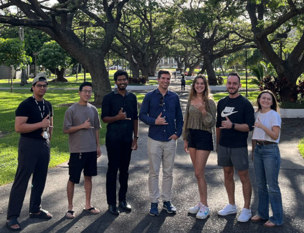

Hi! I'm a first-year Computer Science Ph.D. student in Dr. Peter Sadowski's Machine Learning Lab at the University of Hawaii at Manoa. I'm funded by the National Science Foundation Graduate Research Fellowship Program and received my Masters in August 2024.
My research interests lie in applying machine learning to physics, specifically astronomy. After completing my Bachelors in Astrophysics at the University of Colorado Boulder in May 2022, I shifted focus to using scientific domain knowledge to inform machine learning models (AI for science). I am particularly passionate about applying AI to solve astrophysical problems, though I am excited by all scientific applications. I hope to complete my Ph.D. by May 2027.
